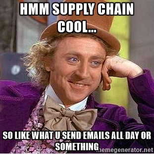

The Department of Business and Information Technology (BIT) offers two degree options for
undergraduate major in Business and Information Technology: The Decision Support Systems (DSS)
and The Operations and Supply Chain Management. These options have many similar as both
options are focused on learning how to effectively use computers and analytical
problem-solving techniques to support decision-making in a business environment.
However, there are also some distinct differences between DSS and OSM degree options. The purpose of
this page is to compare the two options and clarify both their similarities and
differencies. The main goal is guide future BIT students as they consider studying BIT and
choose between these two degree options.
What are the differences between the two BIT options - DSS and OSM?
The Decision Support Systems (DSS)
The Decision Support Systems (DSS) option is the largest of our two BIT
options with approximately 70 percent of our majors. It focuses on teaching our majors how
to develop computer systems that will help businesses and managers solve problems; e.g.,
systems development. As such, it is very applications oriented; i.e., the application of
information and computer technology to solving practical business problems. Computer systems
developed to solve such business problems often require the use of mathematical models.It is
a very computer-intensive degree program that includes information technology tools such as
networks and telecommunications, computer simulation, computer programming, database
management, security, information systems, client/server applications, visual interface
design, object-oriented systems and Internet and e-business systems.
The Operations and Supply Chain Management (OSM)
The Operations and Supply Chain Management (OSM) option is the smaller of
our two options with about 30 percent of our majors. All organizations, business or
otherwise, have "operations", the business processes that get things done in an
organization. The US Department of Labor has listed operations management as one of the top
ten growing occupations in this decade. This option teaches students to occupy management
positions in operations, often in a departmental or supervisory position, or in a staff
position. Topics in this option focus on supply chain management and include quality control
and process improvement, enterprise planning and control, logistics, inventory control,
scheduling, resource allocation, production planning and project management. It is less
computer-intensive than our other two options, yet it still uses computers and information
technology for the analysis and solution of operational problems.
DSS vs OSM Summary
Read summary
Both options are focused on learning how to effectively use computers and analytical problem-solving techniques to support decision-making in a business environment:
DSS
Applications oriented
Computer-intensive degree program
Includes tools such as computer programming, database management, information systems etc.
OSM
Focuses on supply chain management
Less computer-intersive
Uses computers and information technology for the analysis and solutions of operational problems
Student distribution
As stated above, students are not divided equally between two degree options. DSS is far
bigger major, about 70% of student opting for DSS. This student distribution is
demonstrated in figure below.
30 % chooses OSM 30 % of students chooses OSM
70 % chooses DSS 70 % of students chooses DSS
Job Opportunities
DSS Job Opportunies
The job market for graduates of the DSS option is excellent. Over 100 companies and
government organizations annually interview BIT seniors. DSS graduates typically obtain
jobs in the information technology field. Job titles include consultant, technical
consultant, systems analyst, systems developer, network administrator, management analyst,
programmer analyst, project analyst, database developer, software developer, programming
consultant, information manager, applications developer, and information management
consultant, among many others. The largest single type of employer of DSS option graduates
is typically consulting firms . However, numerous other types
of companies and organizations hire DSS graduates to work in various IT-related jobs.
OSM Job Opportunities
The job opportunities for OM option graduates are also excellent. There is a general
shortage of qualified graduates in the operations management area, thus our OM option
graduates are in high-demand. OM option graduates are sometimes hired directly into
management positions but most frequently they are hired into management or staff training
positions. Following training OM majors are typically placed into supervisory or
department head positions where they manage and oversee specific company operations.
Alternatively they may be placed into staff positions where they are involved with
company-wide operational decisions.

Do your research on working life reality. Don't believe memes and stereotypes.
They might lie.
Anything to ask?
If the information provided didn't answer all your questions and you have burning desire
to know what either DSS or OSM is all about, we are here for you. Don't hesitate to
contact us with all your question.
Written by Chrome Dino
Visit us at:
donotvisit.com
Box 404, Chromeland
USA